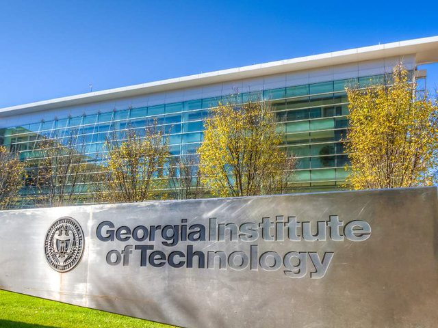
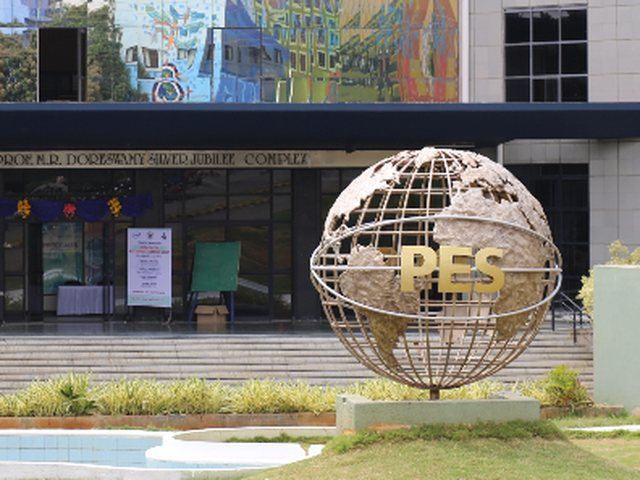

Researcher, engineer, educator, and Kathak dancer — I'm a few things at once.
Hello! I'm Chethana Prasad K, a researcher and software engineer driven by curiosity and a passion for building intelligent systems that make technology more useful, intuitive, and human-centered.
My interests lie at the intersection of Human-Computer Interaction (HCI), Artificial Intelligence, and software engineering. I enjoy exploring how intelligent systems can collaborate with people, whether through interactive user experiences, distributed AI, or responsible machine learning. For me, the most exciting challenges are those that combine rigorous research with practical system design.
I hold a Master's in Computer Science from Georgia Institute of Technology, where my interests span Human-Computer Interaction (HCI) and Artificial Intelligence, alongside an M.Tech (By Research) in Computer Science and Engineering from PES University, where my research focused on trustworthy distributed AI and secure machine learning. My academic journey has been shaped by a simple belief: the best ideas emerge when strong engineering meets thoughtful research.
Over the years, I've worked across industry, academia, and research, beginning my career as a software engineer before transitioning into full-time research. I've been fortunate to contribute to projects at Infosys, PES University, Indian Institute of Science (IISc), and IIIT Bangalore, collaborating with researchers, faculty, and interdisciplinary teams on problems ranging from federated learning and privacy-preserving AI to data governance, NLP-driven systems, and digital public infrastructure. My work has also involved collaborations with organizations including CDAC, IISc-CDPG, and IUDX on large-scale data ecosystem initiatives.
What excites me most is research itself. I love exploring new techniques, formulating models and algorithms, challenging existing assumptions, and diving deep into problems until I understand not only how to solve them, but why they exist. Whether it's designing a new learning framework, investigating anomalies through data forensics, experimenting with graph-based intelligence, or developing trustworthy AI systems, I enjoy the journey of discovery as much as the destination. Research feels like fresh air to me—it constantly pushes me to think differently and learn something new.
My interests naturally sit at the intersection of Human-Computer Interaction, AI systems, and software engineering. I enjoy designing intelligent experiences, building AI-powered applications, developing machine learning systems, and transforming research ideas into software that people can actually use. Coding isn't simply a technical skill for me—it's how I explore ideas, solve problems, and bring concepts to life.
I also enjoy working across disciplines because many of the most interesting problems don't fit neatly into one field. Whether collaborating with researchers, mentoring students, or contributing to interdisciplinary projects, I value environments where curiosity, thoughtful discussion, and experimentation drive innovation.Outside of research, you'll usually find me reading papers well beyond my current project, sketching product ideas, building side projects, or chasing a question that started with a simple "What if?" and somehow turned into an entire weekend of coding.Thanks for visiting my website. If you're interested in discussing research, AI systems, HCI, software engineering, or potential collaborations, I'd be delighted to connect.

